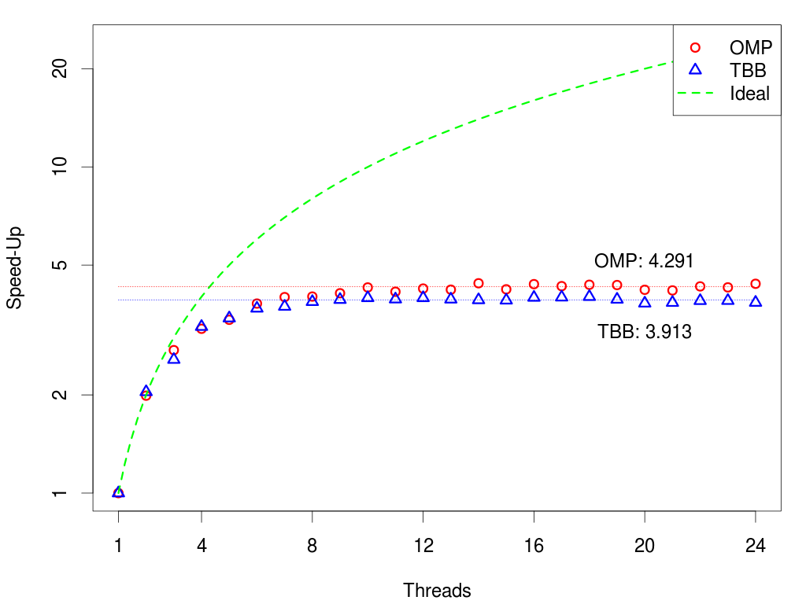
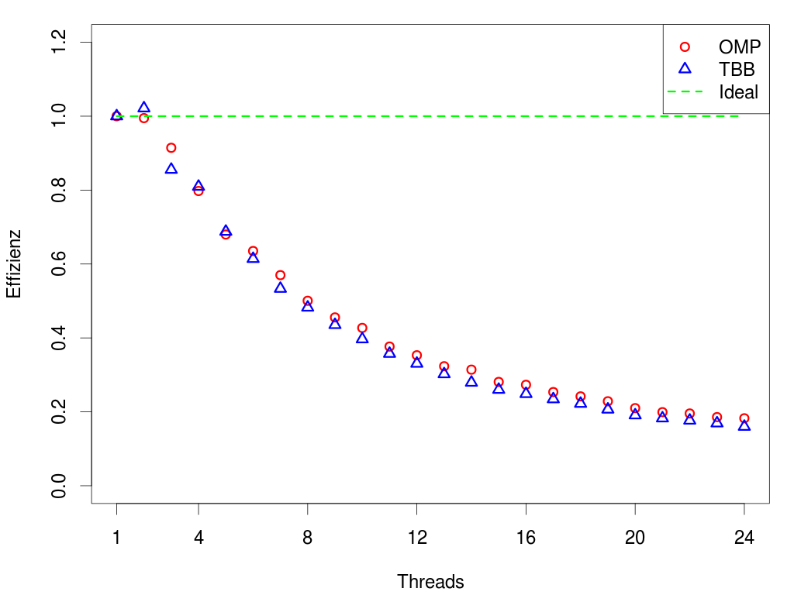

Your browser doesn't support the features required by impress.js, so you are presented with a simplified version of this presentation.
For the best experience please use the latest Chrome, Safari or Firefox browser.
Parallelisierung mit OpenMP
Oliver Erxleben, Martin Helmich
OpenMP - Einführung
- Programmierschnittstelle für C/C++ und Fortran
- seit 1997 entwickelt, von den gängigen Mainstream-Compilern integriert
- besteht aus: Bibliotheksfunktionen, Umgebungsvariablen und Compilerdirektiven
OpenMP vs. TBB
Ausgangsproblem
Work-Hard/Play-Hard-Problem
Probleme bei der Portierung
parallel_do und
parallel_reduce
Tasks
Datenstrukturen
Ergebnisse
Laufzeit bei 5.000.000 Flügen
Speed-Up bei 5.000.000 Flügen

Effizienz bei 5.000.000 Flügen

OpenMP erreicht einen bis zu 9,66% höheren Speed-Up als die TBB.
OpenMP
−
Geringer Sprachumfang(Ergänzung durch andere Bibliotheken, z.B. TBB oder Boost)
+
Schneller
+
Einfach handhabbar
+
Auch für C und Fortran
TBB
−
Nur für C++
−
Umständlich, Wartbarkeit Function Objects sorgen für schwer lesbaren Code
+
Höherer Sprachumfang parallel_do und parallel_reduce
+
Threadsichere Datenstrukturen concurrent_{hash_map,vector,...}}
Quellen
-
Ayguadé, Eduard et al.: The Design of OpenMP Tasks.
In: IEEE Transactions on Parallel and Distributed Systems 20 2009, Nr. 3, 404–418
(URL)
– Zugriff am 27. 12. 2012.
-
Bengel, Günther et al.: Masterkurs Parallele und Verteilte Systeme: Grundlagen
und Programmierung von Multicoreprozessoren, Multiprozessoren, Cluster und
Grid. 1. Auflage. Wiesbaden : Vieweg & Teubner Verlag, Juni 2008, ISBN 978–
3–8348–0394–4.
-
Duran, Alejandro: Tasking in OpenMP. Juni 2009 (URL: https://iwomp.zih.
tu-dresden.de/downloads/omp30-tasks.pdf) – Zugriff am 28. 12. 2012.
-
Hoffmann, S. und Lienhart, R: OpenMP - Eine Einführung in die parallele Programmierung mit C/C++. Springer, 2008.
-
Intel: Cook Until Done: parallel_do. 2012a (URL) – Zugriff am 27. 12. 2012.
-
Intel: Mixing With Other Threading Packages. 2012b (URL) – Zugriff am 2012-12-28.
-
Microsoft: OpenMP in Visual C++. 2012 (URL) – Zugriff am 2012-12-27.
-
openmp.org: OpenMP.org: OpenMP Compilers. 2012a (URL) – Zugriff am 2012-12-27.
-
openmp.org: OpenMP.org: OpenMP Specifications. 2012b (URL) – Zugriff am 2012-12-27.
-
Rauber, Thomas und Rünger, Gudula: Parallel Programming for Multicore and
Cluster Systems. 1. Auflage. Berlin : Springer, März 2010, ISBN 978–3642048173.
Use a spacebar or arrow keys to navigate